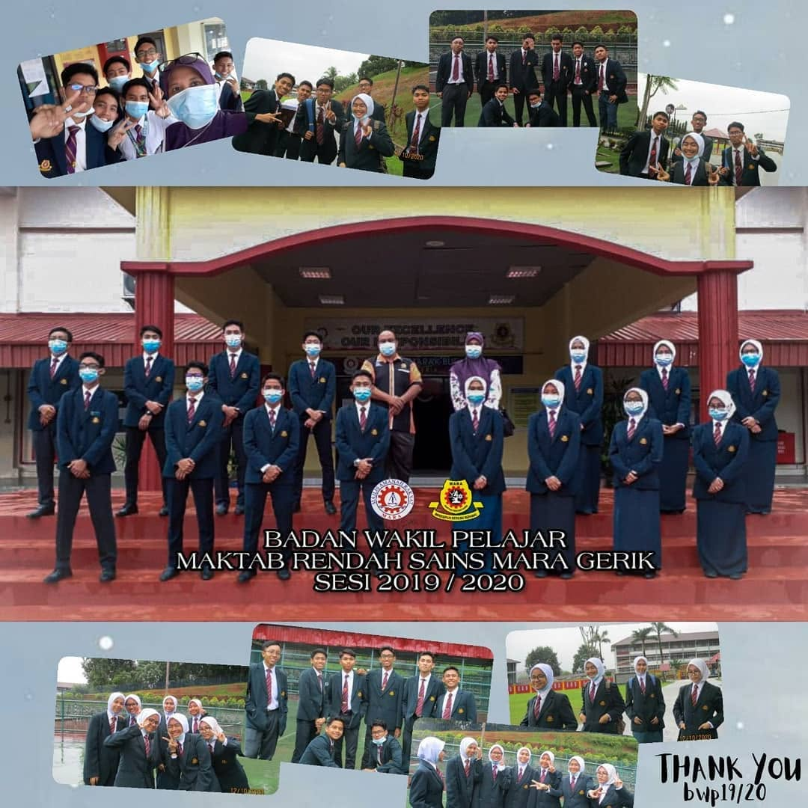
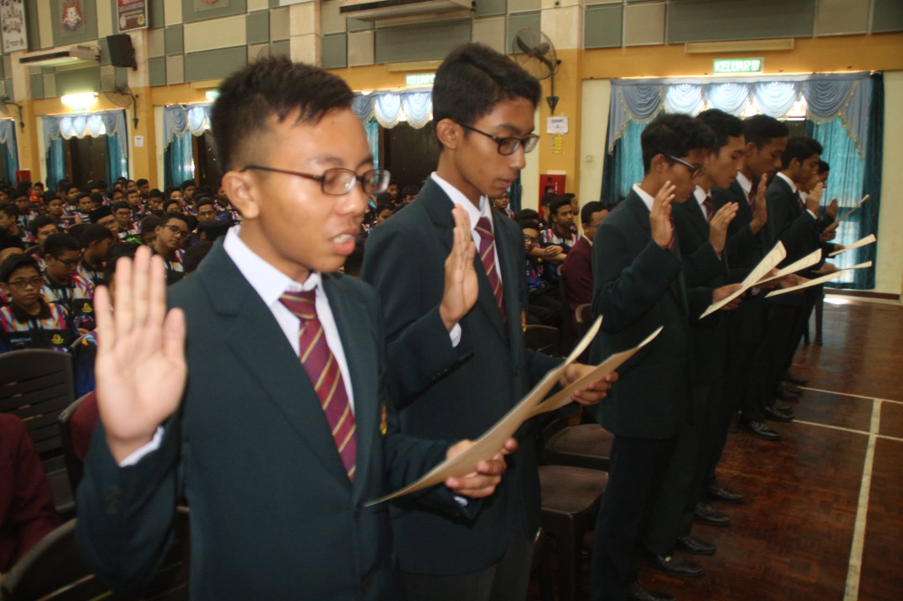
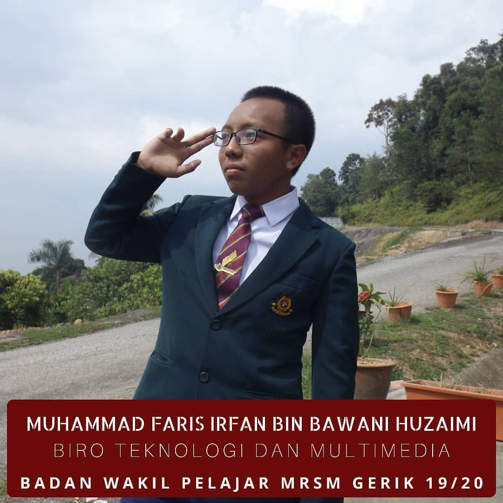
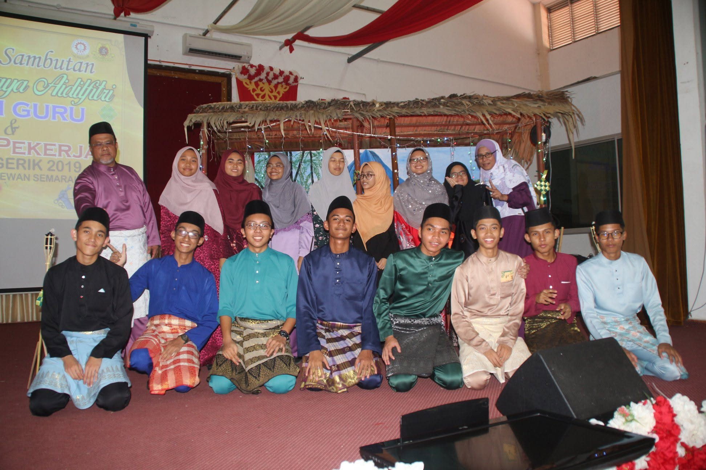
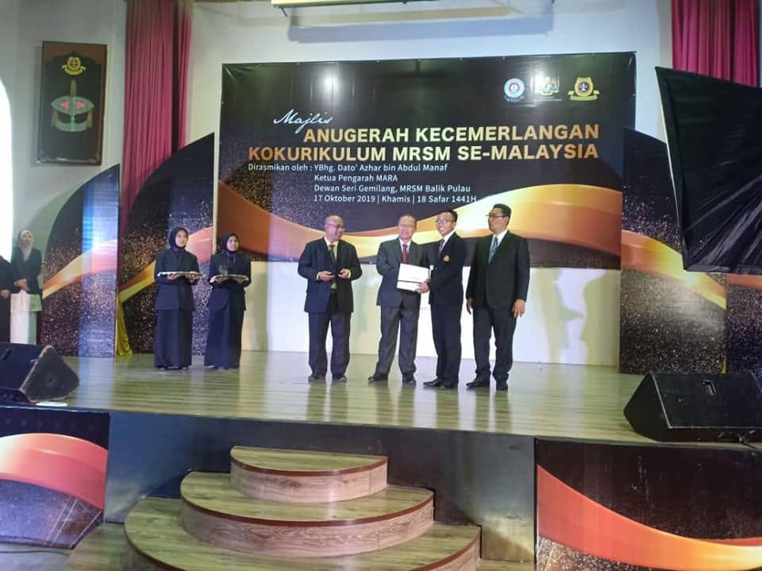
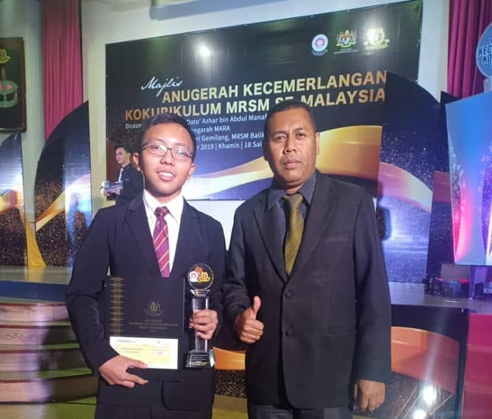

1. "BWP" / Student Representative Council





Being appointed as a member of the Student Representative Council was a big thing for MRSM students, as it showed that most students recognised and trusted them to be their leaders. Becoming one myself was quite a shocked because I didn't expect it. Most of the time, students would always vote for candidates that are well-known and respected. I was sure that I'm not one of them as I'm not outsgoing enough to be considered well-known by others students. They chose me because I known to have good discipline-reputation and I'm a good listener. Being recognised for that quality was a great honour.
2. My friends


My friends have been a constant source of joy and support throughout my high school life. Studying at a boarding school, they became like a second family to me. They have shared countless memories with me, from simple conversations to adventures that have shaped who I am today. Without them, my high school experience would not have been the same.
3. Outstanding Uniformed Body Award


Receiving the Outstanding Uniformed Body Award was not once even crossed my mind. It was a surprise as my peers and me were not aware of such award exists. Suddenly being approached by the principal to being told about me getting the award was a moment of that I will never forget. Receiving that award was a tremendous honour and being able to show it to my family and friends was a proudest moment.